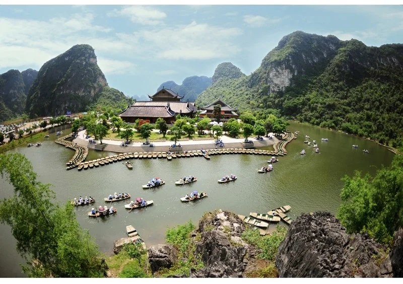
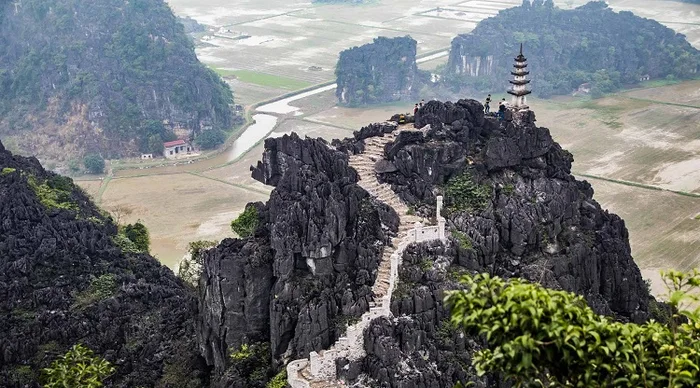
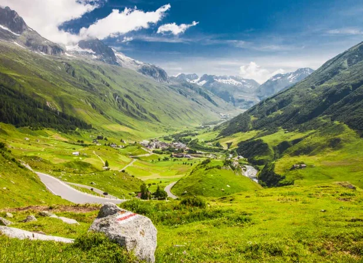
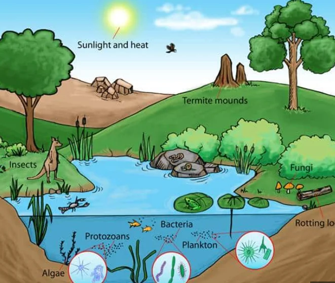

A trip to Trang An
Lesson 5 — Listening
6Five stops in 45 minutes
- 🧩
Jigsaw puzzle
Warm-up
5 min - 📚
Before listening
Discuss + new words
9 min - 🎧
The tour guide
Tasks 2–3
15 min - 🗺️
What next?
Predict and present
13 min - ✅
Wrap-up
Exit ticket
3 min
Warm-up
Jigsaw puzzle · find the key picture
5 minutesWhat is the key picture?
1. Who was the founding emperor of the Dinh dynasty of Viet Nam? Dinh Bo Linh (Dinh Tien Hoang)
2. What is a complex of Buddhist temples in Gia Vien District, Ninh Binh Province? Bai Dinh Pagoda
3. Which film was made in Van Long, Tam Coc (Ninh Binh) and Ha Long Bay? Kong: Skull Island
4. Large holes in the side of a hill or mountain, or under the ground. What are they? caves
Before listening
Discuss + new words
9 minutesWhat do you know about Trang An?

Where is it? Is it a World Heritage Site?
Have you been there? What did you see or do?
Ninh Binh · about 10,000 ha · “Ha Long Bay on land” · caves, mountains, temples



Words in the talk
- interact (v) /ˌɪntərˈækt/ tương tác
- original (adj) /əˈrɪdʒənl/ nguyên bản, ban đầu
While listening
The tour guide
15 minutesListen for the main idea
Choose A, B or C B — A and C are only parts of the talk
A. The tour guide is explaining why Trang An is a mixed World Heritage Site.
B. The tour guide is talking about the ecosystem of Trang An and efforts to preserve it.
C. The tour guide is introducing the site’s natural beauty.
Trang An Scenic Landscape Complex
Quick facts: recognised as the first mixed World Heritage Site in (1) ______ 2014
famous for its beautiful landscape and long cultural history · consists of (2) ______ three protected areas
Natural beauty and biodiversity: limestone mountains, valleys and rivers · more than (3) ______ of plants and 200 types of animals 600 types
Trang An Scenic Landscape Complex
Cultural heritage: caves showing how (4) ______ lived over a period of 30,000 years · hundreds of temples and historic pagodas early humans
Current condition: not changed or damaged by human activities · most of the site is still kept in its (5) ______, e.g. the original style of architecture natural state
Most of the site is still in its natural state
Evidence from the caves that we’ll visit today shows how early humans interacted with the natural environment to deal with climate change over a period of 30,000 years. …
There is a long history of protection of the area and most of the site is still in its natural state. For example, the architecture of the pagodas and temples is kept in its original style. Any work to preserve, protect, and promote the area is planned carefully. Now, we’ll start our tour with …
After listening
What will the tour guide say next?
13 minutesWhat will the tour guide say next?
- 🏯
Hoa Lu
the ancient capital
- 🛶
Trang An
boat trip through caves
- 🌾
Tam Coc
rice fields and rivers
- ⛰️
Bich Dong
the pagoda on the mountain
I think the guide will talk about … because … · Then groups play the guide and present the next part.
Visitors should … because …
- 🚶
Stay on the path
protect natural habitats
- 🚯
No littering
keep rivers and valleys clean
- 🛕
Respect historic sites
preserve our culture
One lesson, three takeaways
- 💡
one new fact about Trang An
- 📚
one word you can use
- 🌱
one action to protect heritage
Homework
1. Do the Listening exercises in the workbook.
2. Review your notes about Trang An — you will write a leaflet in Lesson 6.
3. Get ready for Lesson 6 — Writing.